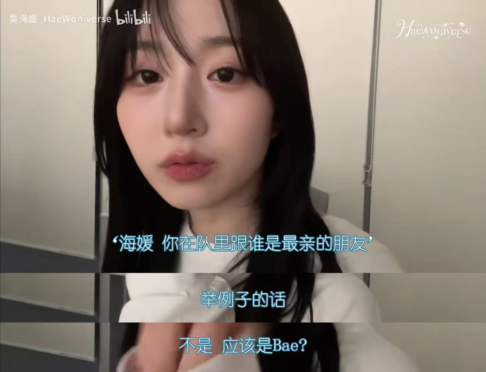
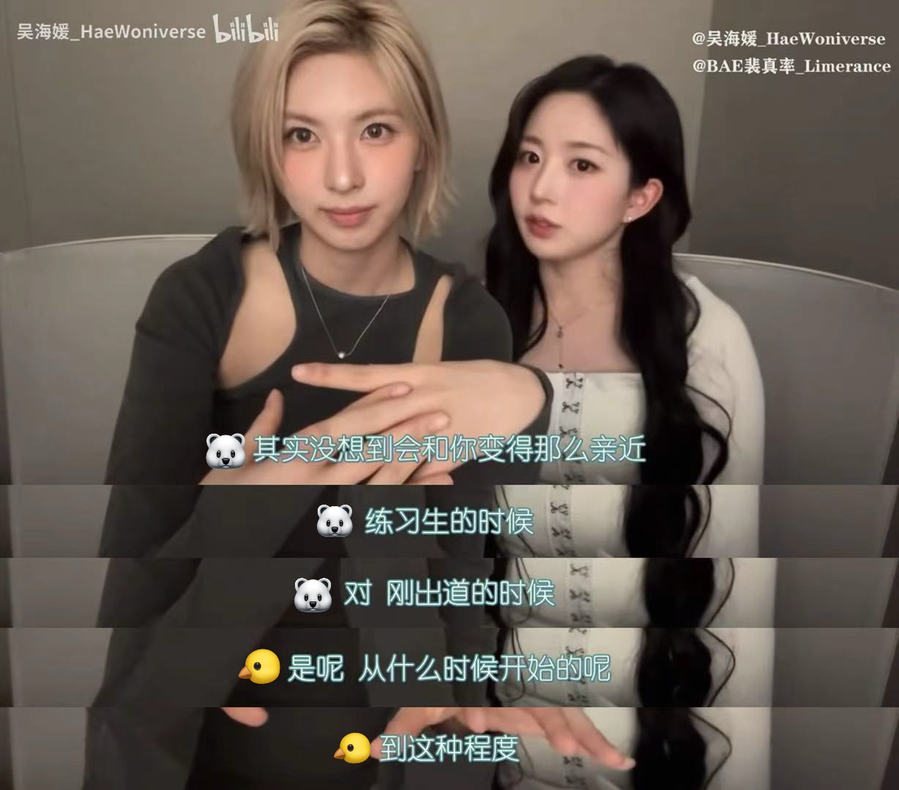
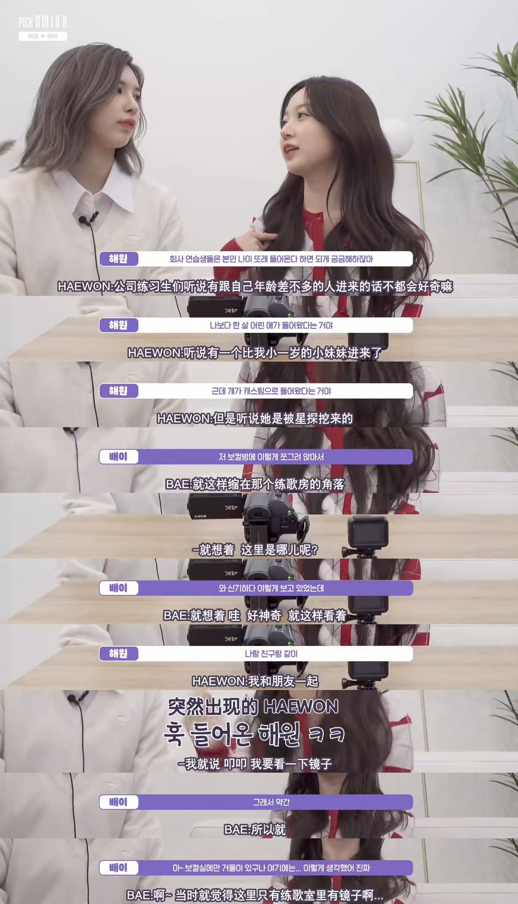
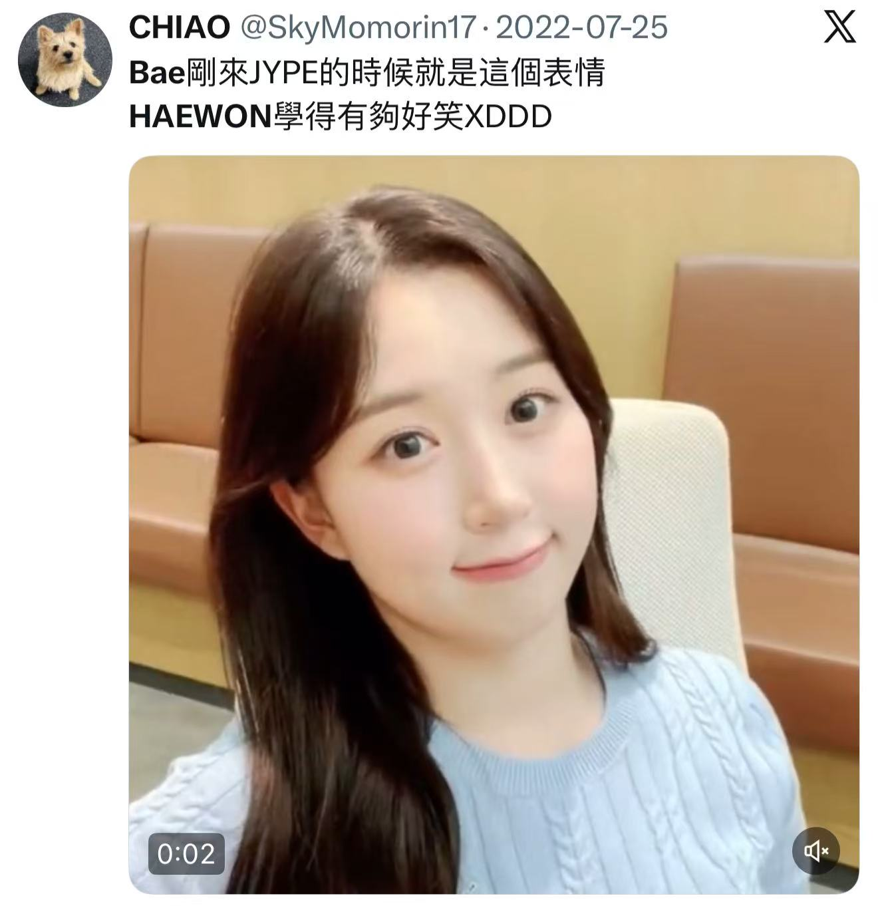
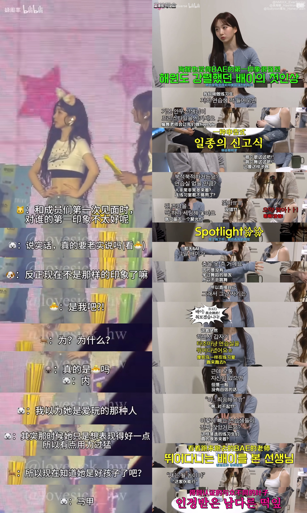
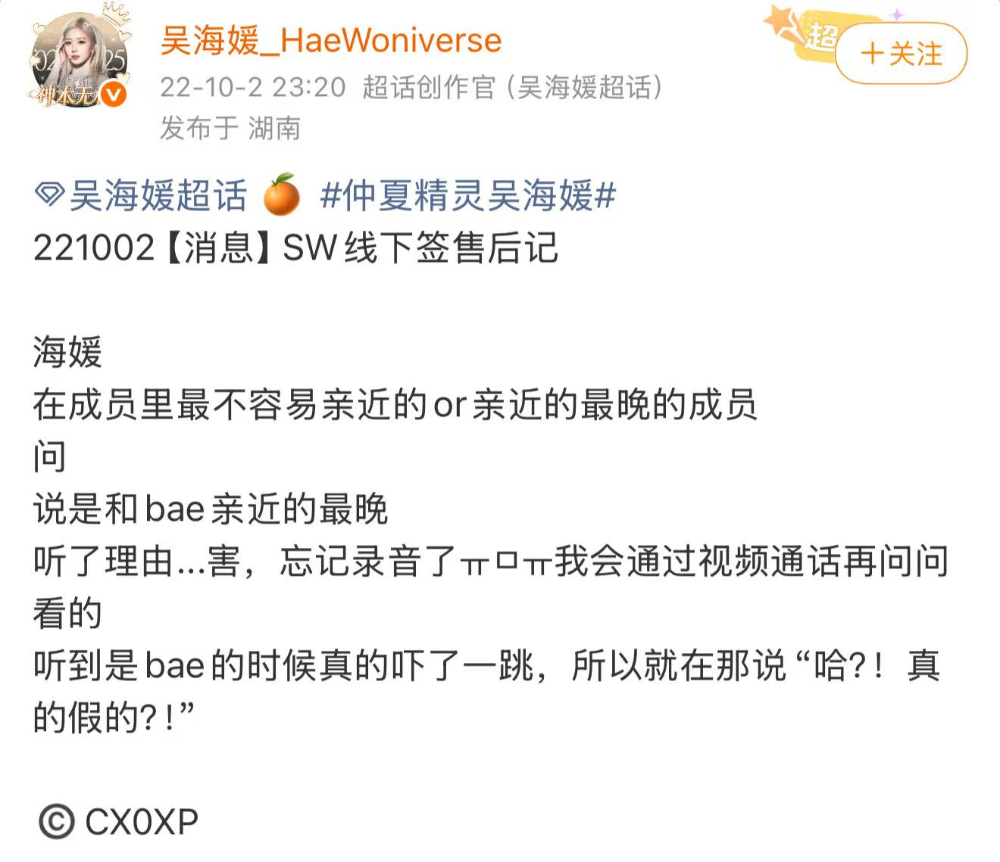
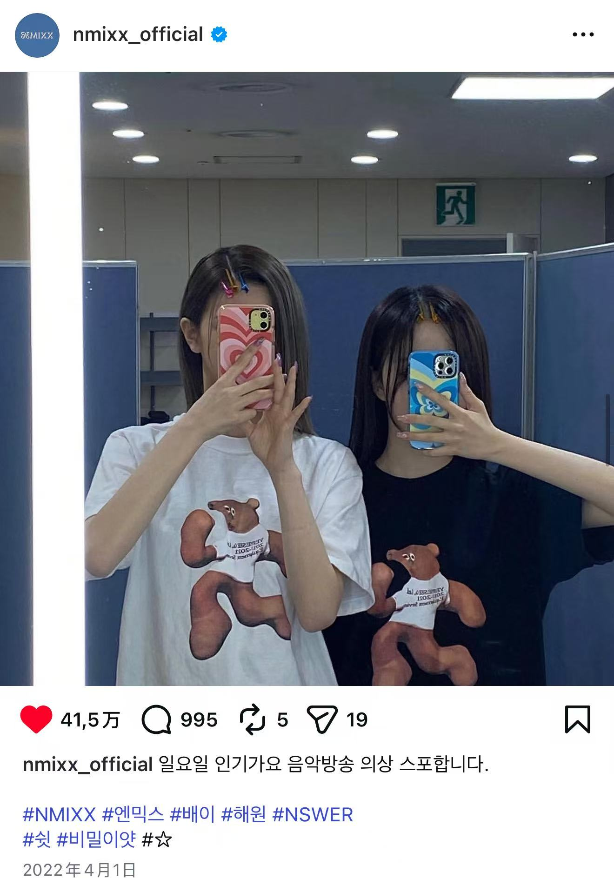
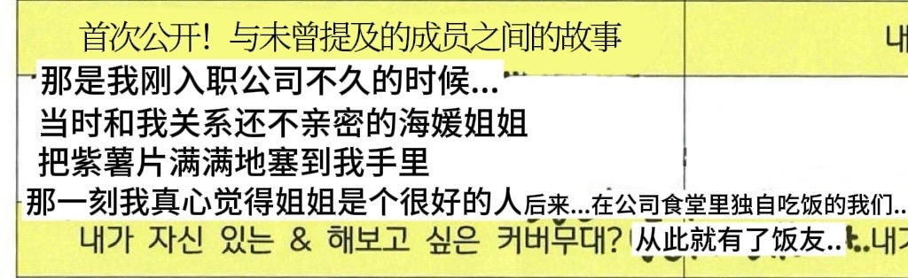
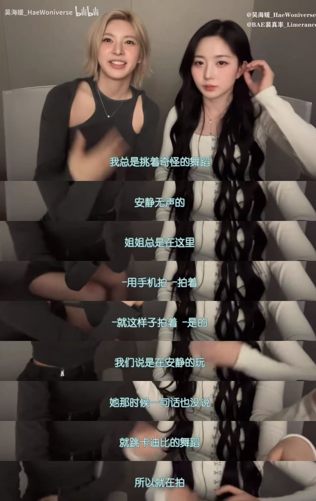
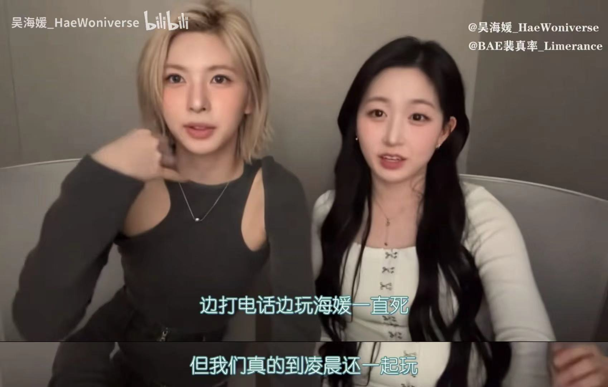

问：这是一篇什么东西？ 答：和题目一样，这是一篇被害人笔录，是一个被cp害惨了的人写下的cp相关的告白书，实际上就是一篇为了韩国女团NMIXX成员吴海嫄和裴真率的cp组合baewon而存在的个人视角的cp介绍白皮书。（关于这对cp组合，根据对内年龄排序和大家的习惯，正式的笔录中会用2指代吴海嫄，用5指代裴真率。）
问：这其中的被害（baehae）是什么意思？ 答：bae是裴真率的艺名而won取自吴海嫄的罗马化名字ohhaewon，这是我对她们两人cp的代称。实际上更常用的叫法是baewon只是对我而言baehae不仅形式上极其工整有一种仿佛做了妻妻的和谐感，而且谐音上既可以是浪漫的北海也可以是悲惨的被害，我被她们俩害得不轻，这是我字字泣血的独白，于是选用了“被害”。
问：写作原因是？ 答：作为祖上富过曾是美帝现在却逐渐没落的cp，我想许多新入坑的恩瑟对于这对cp的魅力不甚了解。已经看过太多太多人的cp取向调查问卷中产产之间既没有红线也没有黑线只有宛如陌生人一般的隐形线或者“cb的话会更好”线。每次看到你们对两姊妹的真情与麦麸视而不见我心里都会一阵酸涩，所以想用这样一篇文章来梳理我眼中的baewon/baehae/次笑组/爻25，一是让自己更加完整清晰的理解她们之间的关系，二是希望你们多少也能感受到这对cp的特别，说白了就是，怎能只有我被害？所以想把大家都拉下痛并快乐着的baehae深渊。
问：整篇笔录将如何安排？ 答：目前的想法是分为三个部分，第一部分是25七宗罪，我将对25犯下的罪行一一进行陈列，表达我对她俩的主要指控。第二部分是25的详细编年史，对她俩关系怎样发展如何变化进行物料盘点，可能会有遗漏，欢迎其他被害人补充。第三个部分就是一些总结陈词了，是我个人的一些看法和感想，希望她俩能对我负责。
问：还有什么想说的吗？ 答：整篇文章将充满浓浓的个人色彩和大量臆想，所以仅仅是提供一种看待25的视角，希望能留下25cp也是很好吃的这样的印象。当然，如果不仅是对这对cp，如果能帮助你们对2和5都有更好的理解的话就好了，毕竟人是社会动物嘛，理解这个人与其他人的关系对于认识这个人也很重要。不过话好像已经说得太多了，总之，正文马上开始，希望大家能看得开心！
熟悉25的朋友都知道，她俩的“新时代搞笑双人组”简称“次笑组”是nmixx的综艺效果担当和搞笑担当。两人的脑回路出奇地一致且抽象，常常上演一些意想不到的情景剧，于是在次笑组的标签以及两姊妹的浮夸表演下，她俩的互动都蒙上一层淡淡的喜剧滤镜。
因此，许多人都认为这俩人之间朦朦胧胧的药味太淡，更像好闺蜜/好兄弟。
但在我眼里，25味正隐藏在这种搞笑之中，是将世界划分至你我之外的精神共鸣，是玩笑话之下的试探与真心。
总之，关于我是怎么被她俩害的，我将逐个指控。

20240531月刊吴海嫄

20241031月刊吴海嫄

因为好奇所以在正式见面前特意去看了

看到的应该就是这副模样

正式见面时像鸵鸟一样跑初印象能好吗？好在长得萌萌
各种buff叠加下初印象就很深刻很特别了，但这种落差感怎么有点网恋奔现失败的感觉。于是18年加入JYP的5虽然不是成员中最晚的，但据当事人2所说却是熟悉得最晚的成员：

等等，po主吓了一跳，我也吓了一跳，结合之前她俩自己说的，熟悉得最晚？刚出道的时候不熟？那么在出道初期幕后花絮里总是黏在一起，用了半年多情侣手机壳的不是你们两位吗？

我还以为是情侣官宣呢
手机壳是5买的 T恤是2买的

好纯爱，2你不是被动型吗？初印象不是不好吗？

此处省略一长段外人难以理解的她俩的娱乐方式

疫情期间还会打电话到凌晨
这种关系怎么看也是十分合得来十分亲密了，在你俩口中却是不到现在这种程度的亲近吗？那请问你们两位现在的关系是…如果做了什么见不得人的事请就请说出来让我高兴高兴吧（x）。
另外，不仅是当事人的说辞与实际情况有出入，25关系的整个发展过程也是跌宕起伏。
从各种物料里二位的表现来看，到现在为止我们25也是经历了完整的热恋期新婚期离婚冷静期和感情回温期的小情侣了。至于具体是怎样变化的，第二部分会有详细说明。